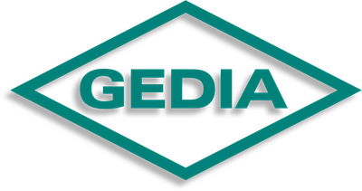
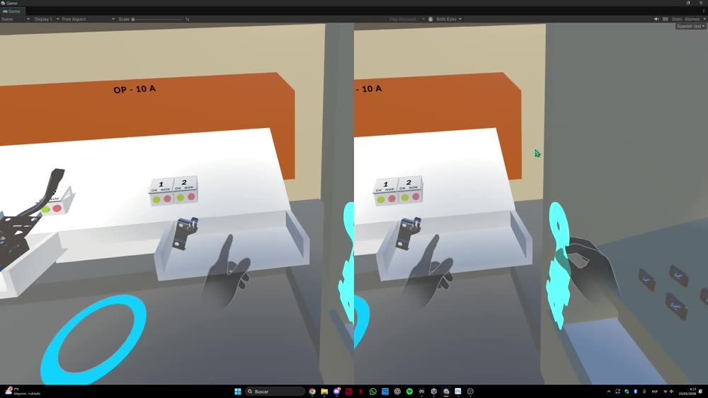
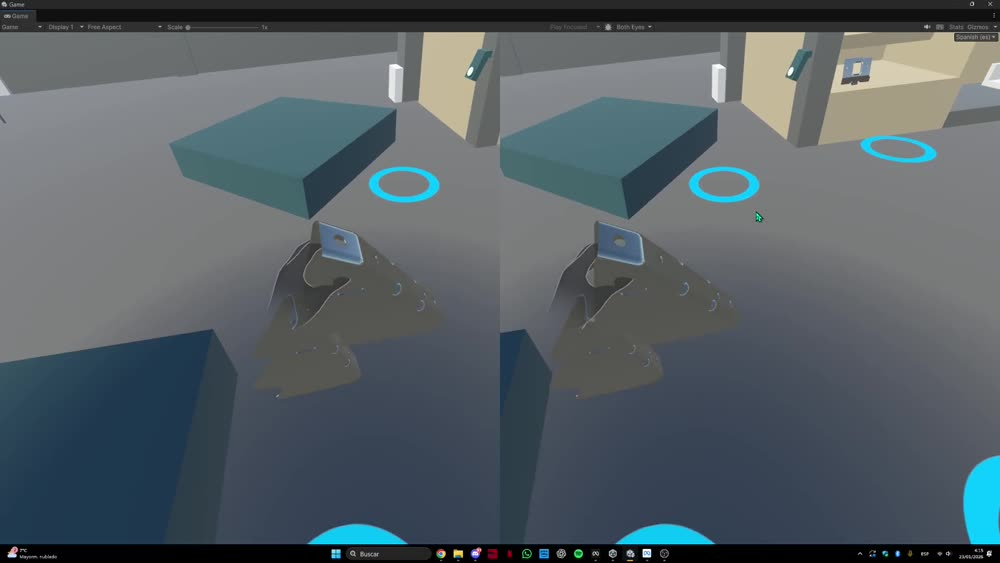

Formación VR para nuevos operarios

Automotive Group

// el proyecto
GEDIA es una multinacional alemana proveedora de la industria de automoción, con planta también en España. Este proyecto consistió en desarrollar, en Unity, un simulador de Realidad Virtual que recrea una de las operaciones reales de montaje de la planta.
La experiencia está gamificada con dos modos: un modo práctica, donde el operario aprende el proceso paso a paso sin presión, y un modo examen, que evalúa su desempeño contando los errores cometidos y midiendo el tiempo empleado. Con esos datos, la empresa puede valorar objetivamente si esa persona ya está lista para incorporarse al puesto de trabajo real.
El objetivo final es reducir el tiempo de formación de los nuevos operarios y detectar antes de tiempo posibles errores, evitando incidencias en la línea de producción real.
// mi rol
Formé parte del equipo de desarrollo, trabajando en las mecánicas de interacción en VR (manipulación de objetos con los controladores), la construcción del entorno 3D y la lógica del flujo de formación dentro de Unity.
// enlaces
Por temas de confidencialidad con el cliente, no puedo compartir públicamente el repositorio de este proyecto. Si quieres más detalles técnicos, escríbeme y hablamos.